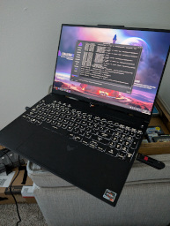
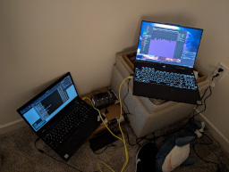
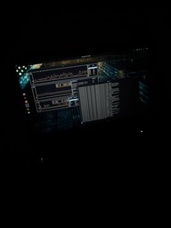

you can click images for a full resolution version
new collection:
asus tuf gaming a16


My current main laptop and main computer, as I no longer have a desktop. Bought it during black
friday for like $600. It has a Ryzen 7 7735HS cpu and Radeon 7700S gpu. It's also got a 165hz 1080p screen.
I like it a lot! I keep running out of space on the drive though, I need a larger one.
thinkpad t570

A used laptop I got cheap. It has a 2c4t i5-7600u, 16gb of ram, and a 256gb ssd. It's fine.
computers that were destroyed in the flood
all of these computers were destroyed in hurricane helene
main desktop
My main pc. It's been upgraded to a ryzen 5 7600 from a ryzen 5 3600. It's got an rx 5700xt and 32gb
of ddr5. I run endeavoros.
pentium iii system
My windows 98 machine. It's a dell dimension xps d300 case sporting a pentum 3 700mhz with a
geforce4 mx440 (essentially a geforce2 gts) and 384mb of ram. I've got both an ess audiodrive for dos and a
soundblaster audigy for windows. It was originally a pentium 2 300mhz but i swapped the motherboard for one
from a dell dimension xps t700r.
asus zenbook
My main laptop. It's got a ryzen 5 5500u with integrated and nvidia mx450 graphics and 8gb of
ddr4 ram. It currently runs endeavoros and i use it for laptop things.
2009 mac pro
My nas. It has dual xeon x5570s for 8 total cores with a rx 560 and 16gb of ddr3
ram. It has 4 1tb hard drives in raidz1 and 1 128gb sata ssd on a pcie card. I use it as a debian nas and
server.
dell precision t5820
Planned to be my new nas, transferred from the 09 mac pro. Haven't gotten around to it yet. It has a
xeon w-2135, which is a 6 core skylake chip. I gave it 32gb of ddr4 and 2 4tb hard drives.
mac mini g4
It has a powerpc g4 at 1.25ghz, radeon 9200 graphics, and 1gb of ddr ram.
In the past it used an ssd with an m.2 sata to ide adapter, but currently does not have a hard drive. I've run
mac os 10.4, 10.5 sorbet leopard, and gentoo on it in the past. The superdrive is unfortunately dead.
powerbook g4
It has a powerpc g4 running at 1.67ghz, radeon 9700 128mb graphics, and 2gb
of ddr2 ram. It has an 80gb hard drive currently dual booting mac os 10.4 and 10.5 sorbet leopard. I use it
to play old mac games and minecraft.
powermac g4
a quicksilver model, it has a powerpc g4, some ram, and a cool scsi card. I haven't really been able
to get this machine working.
powermac g5
It has a single powerpc g5 running at 1.8ghz, some ram, and a gpu. It is an ongoing project.
thinkpad t400
It has a core 2 duo (something or other) with gm45 graphics and 8gb of
ddr3 ram. It currently runs windows vista, but has run windows 7 and manjaro in the past. I use it for windows
things.
generic core 2 duo dell
Looks like every early to mid thousands office dell. I don't even remember the model number. I
slapped a xfx 7800gs in it for winxp gaming. Haven't used it much yet.
tandy coco 2
I haven't gotten a lot of work done with this machine, but I like it a lot! I've been meaning to set
up drivewire and do some code development.
computers i no longer own
mac plus
It is stock except for 4mb of ram. I got it for cheap without a keyboard or
mouse, but it does boot. Had to clean the floppy drive though. I didn't use it for much without the
keyboard or mouse.
compact mac hoard
I got a lot of compact macs, pluses and ses and stuff. Sold a lot of em off, and scrapped the
unfixable ones.
imac 2007
It's got an upgraded core 2 duo of some kind and 4gb of ram. It currently
runs mac os el capitan. It's pretty beat up and i use it as an intel machine with firewire and semi modern
macos. eventually i hope to replace it with a macbook of some kind, as it's kinda bulky.
emachines small tower
This is a small emachines tower from 2009. It's got an athlon ii x220 and 8gb of ram, with a 1tb
hard drive. It runs windows 7. It's gpu is a geforce 6150se, which is from 2004 and trash.